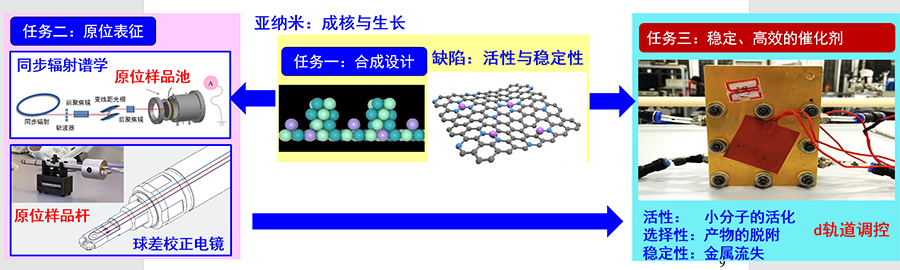

Precious synthesis and atomic-level regulation of nanostructured materials with atomically dispersed metal species or metal clusters.
In-depth understanding of catalytic concept
Revealing catalytic mechanism on atomically dispersed metal sites or metal clusters based on emerging in-situ characterization techniques

Fuel cells technology research and development toward industrial demand
Design and synthesis of catalysts in H2/Air fuel cells for realizing long-term operation stability (over 1,000 hours), high output power density (over 800 mW/cm2) and low cost of membrane electrode (less than ￥8/kW).